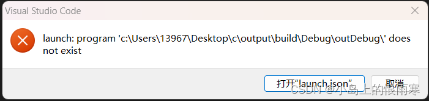
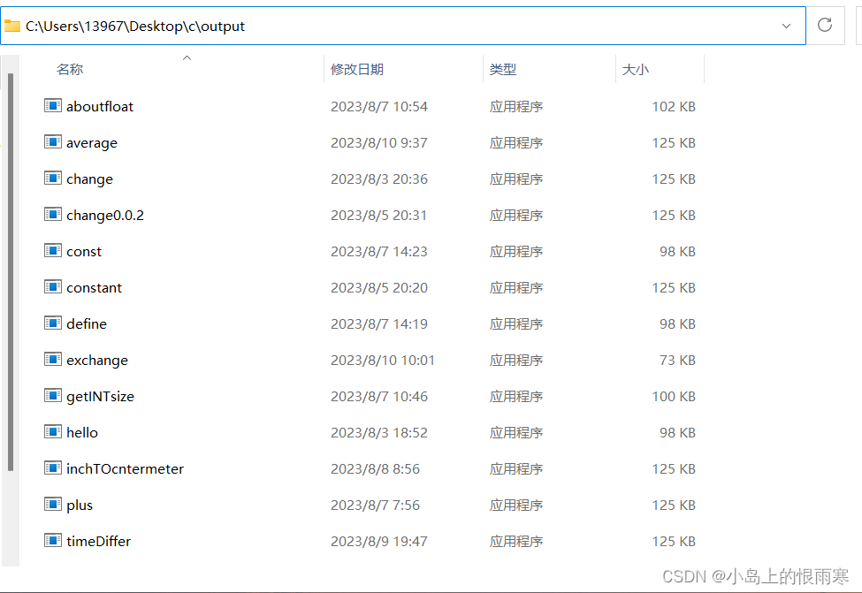
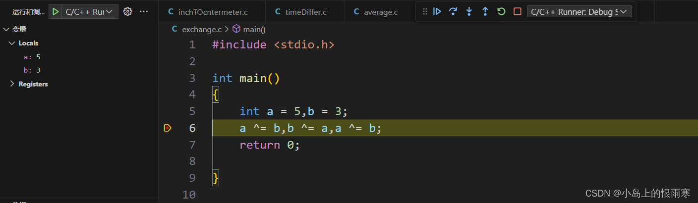

How to Fix Debugging Issues in VSCode
When developing code in VS Code, you may encounter the error:
launch: program 'c:\build\Debug\outDebug' does not exist
as shown in the figure below.

Following the hint, we can open the launch.json file:
{
"version": "0.2.0",
"configurations": [
{
"name": "C/C++ Runner: Debug Session",
"type": "cppdbg",
"request": "launch",
"args": [],
"stopAtEntry": false,
"externalConsole": true,
"cwd": "c:/Users/13967/Desktop/c/output",
"program": "c:/Users/13967/Desktop/c/output/build/Debug/outDebug/",
"MIMode": "gdb",
"miDebuggerPath": "gdb",
"setupCommands": [
{
"description": "Enable pretty-printing for gdb",
"text": "-enable-pretty-printing",
"ignoreFailures": true
}
]
}
]
}After checking carefully, the issue comes from the program field:
"program": "c:/Users/13967/Desktop/c/output/build/Debug/outDebug/",This path points to a general location, but it is not precise enough.

As shown, all my compiled C program executables are stored in:
C:\Users\13967\Desktop\c\output
instead of
c:/Users/13967/Desktop/c/output/build/Debug/outDebug/ defined in launch.json.
Solution
We need to set the file path to the actual folder where the compiled C executables are stored on your computer. Then append
"${fileBasenameNoExtension}.exe"to locate the specific .exe program being debugged.
For example, on my computer, the corrected setting is:
"program": "c:/Users/13967/Desktop/c/output/${fileBasenameNoExtension}.exe"
Now the problem is solved! The program can be executed, breakpoints can be set, and debugging works as expected.